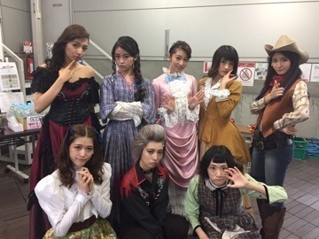
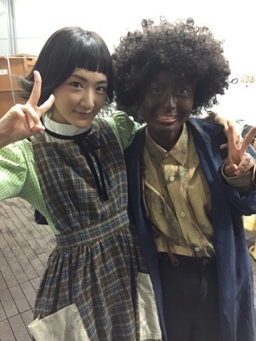

| 2015/10 01 Thu | わんわんわーん犬組初日ヽ(・∀・)ノ |
今日は
ついに始まりました
舞台
すべての犬は天国へ行く
の初日でした〜

うぇーいᕕ( ᐛ )ᕗ
みんなその役にあっててね、
見所満載の舞台です！
初日を迎えるまで決して充分な時間がある訳ではなかったけど。。
でもメンバーと、素敵な女優の皆さんと、
乃木坂が稽古でれない日に代わりに役に入っていっぱい教えてくれたアンダーのお姉さん達と
みんなでいっぱい協力してひとつの作品を作る事が出来ましたヽ(・∀・)ノ
まだ初日ですから、
明日からもよろしくお願いしますヽ(・∀・)ノ
この髪の毛地毛なんだよヽ(・∀・)ノ
前ブログで舞台観にきた方に見て欲しい生駒ちゃんの変化というものはこれでしたヽ(・∀・)ノ
本物みると面白いよ笑
私は柿丸さん演じるエバの娘のメリィ役ですヽ(・∀・)ノ
プリンシパルで乃木坂をサポートしてくださった柿丸さんの今は娘役になれて、
本当に嬉しいです！！
前髪をオンザ眉毛にしたよ
地毛から役に近づいたほうが常にメリィちゃんでいれるからお気に入りっ！！

ニーコさんとヽ(・∀・)ノ
ニーコさんはリトルチビ役です
ニーコさんと身長同じだし、声質似てるねってめちゃ嬉しい事を言われました
家庭教師ヒットマンリボーン観てたから同じ舞台に立つってなった時はびっくりしたなぁ

相棒って呼び合ってるよ
また、メンバーとお姉さん達とも写真撮ったら載せるねヽ(・∀・)ノ
明日は犬二日目！！
頑張るぞ〜ヽ(・∀・)ノ
へばなっ☆彡
コメント(1027)
2015/10/01 22:54